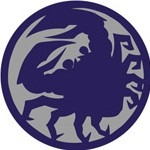

Crab Clan

The stalwart Crab are the defenders of Rokugan, responsible for ensuring the Empire's southern border is secure against the demons of the Shadowlands. Centuries of constant warfare against inhuman foes have hardened the Crab into tremendously powerful and brutally practical warriors, but they have little sense of civility or manners. As a result they are often considered crude and barbaric by the other clans.
Families
Hida
Trait: +1 Strength
The descendants of the Kami Hida are among the largest and most powerful samurai in all the Empire. The burden of defending the Empire falls upon them, and they are both incredible warriors and skilled defensive tacticians. Hida samurai often resent the other Clans for enjoying their protection even as they mock the Crab for their mannerisms.
Hiruma
Trait: +1 Agility
Silent and deadly, the Hiruma are the scouts and yojimbo of the Crab. They are as agile and graceful as the Hida are powerful, and warriors from the two families tend to complement one another very well. Hiruma samurai often have the unsavory duty of scouting the Shadowlands for enemies, a task that leads many to death or ruination.
Kaiu
Trait: +1 Intelligence
The industrious Kaiu are responsible for the most impressive and long-standing feats of engineering in all the Empire. They are the siege engineers and architects of the Crab Clan, and are responsible for maintaining the Great Carpenter Wall as well as its defenses.
Kuni
Trait: +1 Intelligence
Sinister in appearance and deed, the Kuni are among the most feared shugenja families in the Empire. Long ago, the family's leadership determined the only hope of defeating the Shadowlands lay in understanding it, and so the Kuni possess knowledge of things that would drive most men mad.
Yasuki
Trait: Awareness
Strangely at odds with the other Crab families, the Yasuki are slight of build and devious of mind. They were once part of the Crane Clan, but joined the Crab in the third century, provoking the first great internal war in Rokugani history. They are merchants and courtiers, always looking for any means to gain an advantage for their Clan, and tend to be more concerned with monetary gain than is considered respectable for someone of the samurai caste.
Schools
Hida Bushi
The Hida fighting style is one of the oldest and most respected bushi schools in the Empire, and one with a very basic premise: endure the enemy's attacks until you have the opportunity to crush him with sheer brute force. The style was shaped by the Clan's early years combating oni and other Shadowlands enemies, when only the strongest and most resilient among Hida's followers survived. The Hida Bushi School encompasses two broad themes: damage mitigation and heavy weapon use. Hida bushi may not be the most accurate samurai in the Empire, but when they do connect, they inflict tremendous damage. And fortunately for them, they are able to withstand incredible amounts of punishment while they wait to cripple their enemies.
Keywords: Bushi
Benefit: +1 Stamina
Skills: Athletics, Defense, Heavy Weapons (Tetsubo), Intimidation, Kenjutsu, Lore: Shadowlands, any one Bugei Skill
Honor: 3.5
Outfit: Light or Heavy Armor, Sturdy Clothing, Daisho, Heavy Weapon or Polearm, Traveling Pack, 3 koku
Techniques:
| Rank | Name | Flavor | Rule |
|---|---|---|---|
| 1 | The Way of the Crab | The Hida bushi is the epitome of 'heavy infantry,' able to endure harsh blows and deliver crushing attacks in return. | You may ignore TN penalties for wearing heavy armor for all skills except Stealth. When using a Heavy Weapon, you gain a bonus of +1k0 to the total of all damage rolls. |
| 2 | The Mountain Does Not Move | The Hida bushi is famous for extraordinary tenacity, weathering wounds that would kill normal men. | You gain Reduction equal to your Earth Ring. |
| 3 | Two Pincers, One Mind | A Hida bushi is relentless. | You may make attacks as a Simple Action instead of a Complex Action while using Heavy Weapons or weapons with the Samurai keyword |
| 4 | Devastating Blow | A Hida stops at nothing to destroy his enemies once his anger is roused. | Once per encounter, when wielding a Heavy Weapon you may make a calculated strike against the enemy. Lower the enemy's Reduction by 4 for this attack. If this attack succeeds, you Daze the target. The target may recover from this Conditional Effect by making a successful Earth Ring Roll versus a TN equal to your damage roll during the Reaction Stage of each Round. The TN decreases by 5 each time the target fails the roll. |
| 5 | The Mountain Does Not Fall | Nothing can stop a Hida warrior from fulfilling his duty, not even the threat of death. | You may spend a Void Point during the Reaction Stage. During your next Turn, you may take actions as if you were in the Healthy Wound Rank. You ignore the Dazed, Fatigued, and Stunned Conditional Effects. The benefits of this Technique last until the next Reactions Stage. |
Hiruma Bushi
Where the Hida Bushi School teaches endurance and strength, their Hiruma cousins teach avoidance and targeting weak points in an enemy's defenses with lightning fast strikes. The lessons taught by their sensei are essential to fulfilling their duties as warriors inside the Shadowlands. Those who do not heed their teachers well do not survive to perpetuate their mistakes. Those who excel at their lessons become a scourge upon the Shadowlands, moving through that dark realm with speed and grace, leaving death in their wake.
The Hiruma Bushi School emphasizes movement and survival, not just to endure a strike as the Hida do, but to live through an entire skirmish. In one-on-one combat the Hiruma excels at evading his opponents, while in larger skirmishes his ability to avoid damage makes him adept at reaching troublesome foes and eliminating them while his allies tie up other rank-and-file opponents.
Keywords: Bushi
Benefit: +1 Willpower
Skills: Athletics, Hunting, Kenjutsu (Katana), Kyujutsu, Lore: Shadowlands, Stealth, any one Skill
Honor: 4.5
Outfit: Ashigaru or Light Armor, Sturdy Clothing, Daisho, Bow with 20 Arrows or Knife, Traveling Pack, 3 koku
Techniques:
| Rank | Name | Flavor | Rule |
|---|---|---|---|
| 1 | Torch's Flame Flickers | The Hiruma learns to focus his strikes even while protecting himself, perfecting the penetrating quality of his blow without sacrificing his defense. | While you assume the Attack Stance, you gain a bonus of +1k0 to the total of all attack rolls. You are skilled at survival and can make all food, water, and jade rations last twice as long for a number of people equal to your Hunting Skill Rank. |
| 2 | Wolf's Little Lesson | Hiruma learn to dash in and out in a single motion. | While you assume the Attack Stance, you add 5 to your Armor TN every time you hit with a melee weapon. This bonus may stack a number of times equal to your School Rank and lasts until the end of the current skirmish. |
| 3 | Shark Smells Blood | Against a weakened opponent, a Hiruma is a terrible foe indeed. | You may make attacks as a Simple Action instead of a Complex Action when using a weapon with the Samurai keyword. |
| 4 | Hummingbird Wings | The Hiruma know how the hummingbird can move in any direction and apply this truism to battle. | Once per Round you may activate this Technique when an opponent targets you with an attack. You gain a bonus of double your School Rank to your Armor TN for that attack. This stacks with any other Armor TN bonuses you gain from other means (Such as spending a Void Point). |
| 5 | Daylight Wastes No Movement | The Hiruma learns to use no more energy than is precisely needed to kill his opponent. | If you deliver more Wounds than necessary to kill your target, you may apply the excess Wounds to the next target you hit. This Technique does not activate two attacks in a row. The carry-over effect does not last beyond the end of the current skirmish. |
Kuni Shugenja
Once misunderstood, the Kuni Shugenja School has frequently been painted as a collection of obsessive madmen who delve too deeply into secrets no one should explore. Most Kuni would object to the label of madman, but beyond that they would admit the stereotype fits fairly closely with reality. The Kuni understand they must sacrifice certain inhibitions and reservations in order to serve their Clan and Empire to the best of their ability, and they do so without protest.
The Kuni Shugenja School emphasizes the Crab Clan's specialization in fighting creatures of the Shadowlands. The Crab's alliance with the Nezumi tribes that dwell within the region also has granted them great insight into other non-human creatures, and their Technique allows them to benefit or destroy such creatures as desired.
Keywords: Shugenja
Benefit: +1 Willpower
Skills: Calligraphy (Cipher), Defense, Lore: Shadowlands 2, Lore: Theology, Spellcraft, any one Weapon Skill
Honor: 2.5
Outfit: Robes, Wakizashi, Knife, Scroll Satchel, Traveling Pack, 3 koku
Affinity/Deficiency: Earth / Air
Spells: Sense, Commune, Summon, 3 Earth, 2 Fire, and 1 Water
Techniques: Gaze Into Shadow - The Kuni have carefully studied many of the most sinister opponents imaginable, and have learned how to combat them.
- You gain a bonus of +1k0 to the total of all Spell Casting Rolls when the target is any non-human creature, and any spell that inflicts damage inflicts an additional +1k1 damage when used against a target who possesses the Shadowlands Taint.
- You gain +5 TR on any spell with the Jade keyword.
Yasuki Courtier
Once a Crane family, the Yasuki defected to join the Crab after their Doji masters refused to accept the questionable manner in which the Yasuki performed essential tasks necessary for the Crane to function. The Crab were far more practical masters, and under their leadership the Yasuki have become the most prosperous merchant patrons in the Empire. Their sensei emphasize the ability to find that thing one's opponents in court must have, and provide it for them at a low cost, ensuring both profit and gratitude.
The Yasuki specialize in using commerce as a means of gaining the favor of others. They are as much salesman as courtiers and can use any number of sales tactics, including both pressure and false sincerity, to gain that which they desire from others. No one in the Empire can take a simple resource and transform it into a hot commodity with the same style and deftness as a Yasuki courtier.
Keywords: Courtier
Benefit: +1 Intelligence
Skills: Sincerity, Courtier, Etiquette, Bunpitsu, Commerce, Temptation, any one Low Skill
Honor: 2.5
Outfit: Traditional Clothing, Wakizashi, Knife, Calligraphy Set, Traveling Pack, 9 koku
Techniques:
| Rank | Name | Flavor | Rule |
|---|---|---|---|
| 1 | The Way of the Carp | The Yasuki are masters of commerce and practice it far more openly than other samurai families; they do not consider it to be a breach of etiquette to engage in open commerce. | You gain +5 to Commerce rolls, re-roll 1s on Sleight of Hands, and lose no Honor when using Commerce. |
| 2 | Wiles of the Carp | Success in trade often belongs not to the strongest or the fastest, but to the one who knows when to advance and when to withdraw. The Yasuki cultivate a talent for remaining just beyond an enemy's reach, yielding ground only long enough to improve their position. | You re-roll 1s on Sneak. While in the Defense Stance, you gain +5 to one Move. |
| 3 | Treasures of the Carp | The ultimate skill of the Yasuki is to influence others by offering them what they want the most. | You gain Advantage: Ango (Crab), re-roll 1s on Bunpitsu and Temptation (Bribery), and when making Temptation (Bribery), the bribee may not use Honor. |
| 4 | Shadow of the Carp | The Yasuki have never shared the Crab's preference for straightforward battle. Generations spent protecting caravans, negotiating with smugglers, and surviving among rivals have taught them that danger rarely comes from only one direction. | You may make a double attack with a Wakizashi and knives. |
| 5 | Voice of the Carp | The flip side of Yasuki commerce is Yasuki pushiness. The Yasuki are renowned for both their glib tongues and their high-pressure sales tactics, pressuring and deceiving their customers and allies into doing what they want. | Three times per session, you may re-roll a failed Sincerity or Intimidation roll. You must keep the second result. |
Alternate Paths
Crab Berserker
When faced with insurmountable odds, a warrior often retreats to fight again another day. To the Crab Berserker, this is not an option. The Berserker will fight wherever his lord directs him, and focuses his entire being into that fight. The Berserker fights with no limits and continues to ferociously attack until either he or his enemies is bloodied and dead on the ground. The Berserkers often fight against the ravaging Shadowlands Horde and are said to match those beasts in rage and viciousness.
Replaces: Any Crab Bushi school Rank 2
Requirements: Earth 4
Technique: Berserker's Rage - The Crab berserkers manifest their unique and dangerous gifts after spending some time - often months, sometimes even years - on the Kaiu Wall. Some berserkers call on maniacal fury to power their rages, while others enter the notorious "dead eye" trance, but the result is the same: superhuman strength and a near-immunity to pain.
- Once per skirmish, you may enter your rage during the Reactions Stage.
- Once begun, the rage lasts for a number of Combat Rounds equal to double your Earth Ring. (You may end it during an earlier round by spending a Void Point during the Reactions Stage.)
- While in your rage, you:
- Cannot take the Center, Defense, or Full Defense stances, and cannot use any non-Bugei skills.
- While in the raging state, you ignore all penalties and effects of Wound Ranks.
- You also gain a +2k1 bonus to all damage rolls.
- If your Honor Rank is 4 or greater, you lose 1 Honor Point for each use of this Technique.
- If you are killed while raging, you remain alive and can continue to attack until the rage ends, but you cannot be healed (unless you are first targeted with the Force of Will spell) - you are dead, your body simply does not know it yet.
- The rage ends if you sustain Wounds equal to twice the amount that would normally kill you.